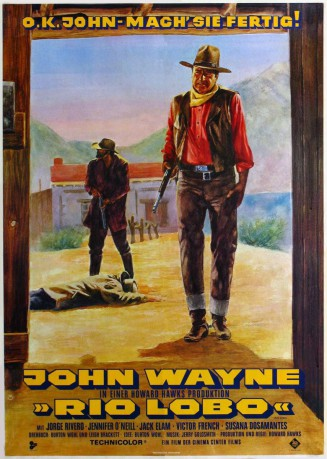

#1355 Rio Lobo
 
 IMDB-Wertung: 6.8 / 10
IMDB-Wertung: 6.8 / 10  Metascore: 0
Metascore: 0 
Während des amerikanischen Bürgerkriegs gelingt Yankee Colonel Cord McNally die Festnahme von zwei konföderierten Soldaten, die zuvor einen Goldzug der Union erfolgreich überfallen haben. Es stellt sich heraus, dass der Transport verraten wurde. McNally versucht Informationen über die Hintergründe zu erhalten, da beim Überfall einer seiner besten jungen Offiziere getötet wurde. Da beide Gefangenen den Namen des Verräters nicht kennen, versprechen sie, sollten sie ihn erfahren, McNally zu informieren. Einige Zeit später, kurz nach dem Bürgerkrieg, erhält McNally, inzwischen aus der Armee ausgeschieden, eine Nachricht aus Rio Lobo über den Verbleib eines Verräters. Zusammen mit dem einstigen Südstaaten Captain Pierre Cordona und der jungen Shaster Delaney macht sich McNally auf den Weg nach Rio Lobo, wo sie den zweiten Ex-Gefangenen, Tuscarora Phillips treffen wollen. Hier trifft McNally schließlich auf den Hintermann, der während des Krieges für den Verrat verantwortlich war.
Jahr: 1970
Dauer: 114 Minuten
FSK: 12
Land: USA Studio: National General PicturesTonspuren:
Untertitel:
Auflösung: 1080p (1920x1080) Größe: 10547 MB
Genre: Abenteuer, Krieg, Western, Liebe
Regisseur: Howard Hawks
Drehbuch: Burton Wohl, Leigh Brackett, Burton Wohl
Soundtrack: Jerry Goldsmith
Darsteller:
 John Wayne als Col. Cord McNally
John Wayne als Col. Cord McNally Jennifer O'Neill als Shasta Delaney
Jennifer O'Neill als Shasta Delaney Jack Elam als Phillips
Jack Elam als Phillips- Christopher Mitchum als Sgt. Tuscarora Phillips
- Victor French als Ketcham
- Sherry Lansing als Amelita
 David Huddleston als Dr. Jones
David Huddleston als Dr. Jones- Bill Williams als Sheriff Pat Cronin
 Jim Davis als Riley
Jim Davis als Riley Robert Donner als Whitey Carter
Robert Donner als Whitey Carter George Plimpton als 4th Gunman
George Plimpton als 4th Gunman Peter Jason als Lt. Forsythe
Peter Jason als Lt. Forsythe Chuck Courtney als Chuck
Chuck Courtney als Chuck- Robert Rothwell als 3rd Gunman
 Sondra Currie als Blackthorne Prostitute , uncredited
Sondra Currie als Blackthorne Prostitute , uncredited Bob Steele als Rio Lobo Deputy , uncredited
Bob Steele als Rio Lobo Deputy , uncredited- Ethan Wayne als (uncredited
 Hank Worden als Hank - Hotel Clerk , uncredited
Hank Worden als Hank - Hotel Clerk , uncredited- Jorge Rivero als Capt. Pierre Cordona
- Susana Dosamantes als María Carmen
 Mike Henry als Sheriff Tom Hendricks
Mike Henry als Sheriff Tom Hendricks Dean Smith als Bide
Dean Smith als Bide Edward Faulkner als Lt. Harris
Edward Faulkner als Lt. Harris- Harold Cops als (uncredited
- Stanley Corson als (uncredited
- José Ángel Espinosa 'Ferrusquilla' als (uncredited
 Chuck Hayward als (uncredited
Chuck Hayward als (uncredited- Conrad Hool als Lon , uncredited
- Lance Hool als Picket , uncredited
 John Hudkins als Rio Lobo Deputy , uncredited
John Hudkins als Rio Lobo Deputy , uncredited Michael Jeffers als Barfly in Blackthorne , uncredited
Michael Jeffers als Barfly in Blackthorne , uncredited- Frank Kennedy als (uncredited
- Richard LaMarr als Man in Army Post Saloon , uncredited
- Charlie Longfoot als (uncredited
- John McKee als Rio Lobo Deputy , uncredited
- Boyd 'Red' Morgan als Train Engineer , uncredited
 William H. O'Brien als Man in Army Post Saloon , uncredited
William H. O'Brien als Man in Army Post Saloon , uncredited Gregg Palmer als Pete - Henchman , uncredited
Gregg Palmer als Pete - Henchman , uncredited- Jim Prejean als (uncredited
 Chuck Roberson als Corporal in Baggage Car , uncredited
Chuck Roberson als Corporal in Baggage Car , uncredited- Danny Sands als (uncredited
- Cap Somers als Card Player , uncredited
- Anthony Sparrow Hawk als (uncredited
- Tommy Tedesco als Guitar Player in Opening Credits , uncredited
Datei: X:\HD-Western-Collections\John Wayne\Rio Lobo (1970, FSK12, 1920x1080).mkv seit 26.06.2015
Festplatte: HD Eastern+Western
 Es gibt insgesamt 34 Filme in der Gruppe 'HD-Western-Collections\John Wayne'
Es gibt insgesamt 34 Filme in der Gruppe 'HD-Western-Collections\John Wayne'